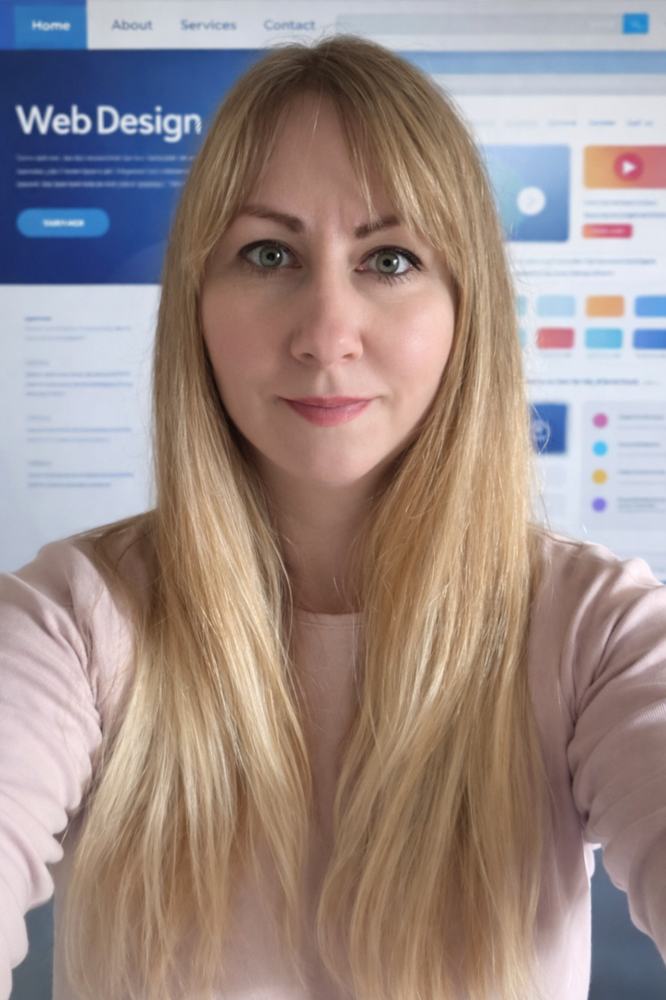

Education & Qualifications
- 2027 (expected): South Staffordshire College; Code Institute Level 5 - Web Application Development
- 2027 (expected): .NET
- 2027 (expected): C#
- 2026 (expected): Level 4 - Lower Back Pain Management
- 2026 (expected): Level 3 - Diploma – GP Exercise Referral
- 2026: Safeguarding in Sport Certificate
- 2026: Level 5 - Child Psychology and Psychiatry Certificate
- 2025: Level 3 – Personal Trainer
- 2025: Level 2 – Gym Instructor
- 2025: Level 2 – Mental Health First Aid and Advocacy in the Workplace
- 2025: Statement of Participation – Sport Burnout and Overtraining
- 2025: EFSET English Certificate – B2
- 2025: Level 1 - Diploma Professional Coaching Certificate
- 2024: Level 2 - Functional Skills – Maths
- 2024: Level 2 - Certificate – Principles of Cyber Security
- 2008–2009: Master of Pharmacy (Specialist Qualification)
- 2003–2005: Pharmacy Assistant Certificate
- 2003: Child and Youth Supervisor Qualification
- 2001: Childcare Babysitting Course
- 1997–2002: Ludovika Human and Pedagogy Secondary School (GCSE)